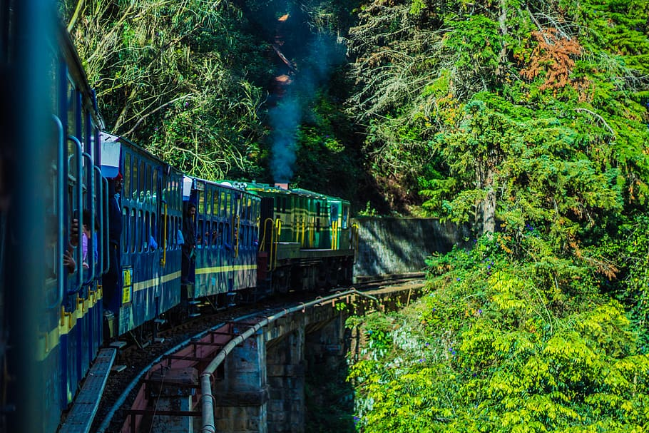

Darjeeling

Facts about Darjeeling :
- Darjeeling is a town in northeast India that is famous for tea, trains and scenic beauty.
- Darjeeling tea is thin, light colored, aromatic and soothing to drink.
- The leaves are grown in the hills around the town.
- Access is by a three-hour car ride from the nearest airport or a seven-hour journey on the Darjeeling Himalayan Railroad, a narrow gauge railway known as the toy train.